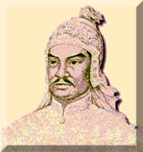
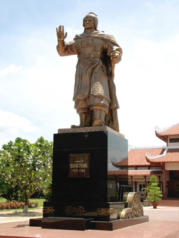

|
|
Deuxième Fondateur
|
Le moine du temple Bouddhiste Dharma
Le Grand-Maître TRƯƠNG-THANH-ÐĂNG
|
|

|
Le Roi QUANG-TRUNG Nguyên-Huê
(Le héros de TAY-SON, Bình-Dinh,Viêt-Nam)
|
Avec les grandes pertes dues à la politique de "tuerie totale, destruction totale,
nettoyage total" des Rois de la dynastie Nguyên, tout ce qui appartenait au règne de Tây Son a été liquidé ou détruit.
Par conséquent, les écrits qui nous permettent de connaître le héros de Tây son sont
très limités. Nous le connaîssons à travers certains documents, certaines légendes relatives à la personne, la vie
et les victoires de ce général invincible dans les guerres contre l'invasion Man Thanh et à ses campagnes pour
l'unification du pays.
Quant à la recherche sur sa contribution dans le domaine des arts martiaux traditionnels
du VN, un domaine spécifique, il y a des difficultés et des limites. Les idées développées ci-dessous ne constituent
qu'une esquisse de synthèse des éléments que nous connaissons. Nous espérons que les amis lecteurs nous en apporteront
leurs idées pour une recherche, plus approfondie, reflétant la réalité de l'histoire.
A. Nguyên Huê, un héros à grande volonté
Les trois frères de la région Tây Son, Nguyên Nhac, Nguyên Lu et Nguyên Huê, étaient
du village Thai' Lao, arrondissement Hung Nguyên, province Nghê An. Au milieu du 17è siècle, l'armée de la dynastie
Nguyên avait traversé le fleuve Gianh pour forcer la population de Nghê An aux travaux de défrichement à Dàng Trong.
Les 4 générations ancestrales des frères Nguyên Huê étaient victimes de ce programme.
Jusqu'à la génération de Nguyên Phu' Phuc', la famille faisait déjà partie de la classe aisée et les trois frères
ont pu suivre la scolarisation..
Le mandarin Nôi Huu Truong van Hanh, opposant au pouvoir de Truong Phuc' Loan, a été
opprimé pour avoir maltraité les traîtres courtisans. Le professeur Hiên', ami proche du mandarin Nôi Huu, craignant
une oppression généralisée, s'est retiré à Bình Dinh depuis plus de 10 ans, et passait son temps à enseigner dans un
hameau proche de la région de Tây Son. Remarquant, chez les 3 frères de Tây Son, une physionomie typique, un caractère
hors du commun et une intelligence supérieure, il leur vouait une estime et leur prodiguait un enseignement allant
de la littérature aux armes, de la stratégie de la guerre aux arts martiaux traditionnels du peuple Vietnamien.
Nguyên Huê émergeait des 3 frères, par sa voix résonnante, son regard perçant et ses
études performantes. Le professeur Hiên', conscient du sort de la patrie, de son peuple d'une part et de son âge
avancé de l'autre, ne cherchait qu'à aider les frères de Tây Son à forger une grande volonté vouée à la destinée
nationale.
|
|
" L'étendard du soulèvement se dresse à Tây Son,
Pour sauver le pays, venger le peuple humilié.
Dans la gloire, plus tard, avec vertu, il faut régner,
Rappelez-vous de cette leçon pour gagner les hommes
". (1)
(1) Recommandation du professeur Hiên à Nguyên Huê avant le soulèvement de Tây Son.
(Nguyễn bá Huân, 1978)
|
|
|
B. Grande volonté d'unifier le pays.
A l'accession au trône, le Roi Quang Trung Nguyên Huê a proclamé:
|
|
" ...Ils ont édifié chacun ses propres frontières, le pays étant en ruine, sa reconstruction n'étant pas
possible. Nous n'avons jamais connu une telle époque. En plus, ces dernières années, le Sud et le Nord s'affrontaient
dans une guerre qui menait le peuple à la misère ... "
|
|
|
Dans la société agricole, il n'y avait que les pauvres paysans qui, écrasés par le
lourd fardeau des catastrophes, se sont élevés pour condamner cette guerre civile, sale, humiliante et dévastatrice.
Nguyên Huê, leader de ces nobles paysans, un individu modeste sans terre, devenait rapidement un héros national par
ses exploits pour l'unification du pays, le rassemblement des forces pour chasser les armées d'occupation, la
protection des frontières et la construction d'une vie meilleure pour la population.
C. Un talent militaire invincible.
Quang Trung Nguyên Huê était un fin stratège militaire et politique:
Mobilisation de l'homme:
Il a planifié, avec ingéniosité, la mobilisation des moyens humains. Les ordres
militaires étaient exécutés avec sévérité et rapidité pour rétablir l'ordre public.:
|
|
"... Ces hommes de Nam Hà (l'armée de Nguyên Huê) ont strictement appliqué les ordres. Sur accusation, sans jugement,
ils décapitaient les voleurs et les bandits. La population était contente de ces punitions et ne cessait
d'admirer l'intégrité de l'armée de Tây son" ...(3)
(3) Lettre du missionnaire Le Roy (Nam Dinh à Blaudin à Paris datée du 11/07/1786.
|
|
|
Mode d'opération- tempête.
Bien qu'issu d'un milieu rural modeste, Nguyên Huê a montré le talent hors du commun
d'un général qui n'avait jamais connu la défaite pendant plus de 20 ans, du Sud au Nord.
|
|
Chaque époque a son héros, chaque héros avait ses propres méthodes de combat:
|
|
Ly Thuong Kiêt attaquait toujours le premier, écrasant ainsi tout début de complot de l'ennemi.
|
|
|
Trân Hung Dao attirait, par ruse, ses ennemis à l'intérieur et les écrasait par des contre attaques.
|
|
|
Lê Loi comptait sur la durée des combats pour gagner bataille par bataille.
|
|
|
Et le Roi Quang Trung Nguyên Huê, avec sa capacité peu commune d'organisation et de commandement, avait créé
une armée qui, quoi que pauvre, à chaque étape de développement, avait un potentiel d'attaque violente et
téméraire. "Force et surprise" constituaient le caractère original des attaques du héros de Tây Son
Nguyên Huê.
|
|
|
Parallèlement à l'organisation et au commandement de l'armée, Nguyên Huê rassemblait
les personnalités de l'époque telles que La Son Phu Tu Nguyên Thiêp, Trân van Ky, Ngô Thoi Nhâm et les généraux
talentueux comme Dang Tiên Dông ( Amiral Muu), l'homme de l'historique victoire de Dông Da, Trân Quang Diêu,
Nguyên Van Dung et notamment Bui Thi Xuan, première femme générale de l'histoire aussi talentueuse et courageuse.
Toutes ces personnalités ont collaboré avec Nguyên Huê à la création des nouvelles
techniques des arts martiaux traditionnels du Vietnam destinés à la préparation des soldats de l'armée.
 En moins de 40 jours, depuis le départ de la grande armée à Phu Xuân,(le 22/11/1788)
et après seulement 55 jours de combat, l'armée des pieds nus a nettoyé plus de 200 mille soldats ennemis en les
poussant hors des frontières, collectant ainsi des victoires à Gian Khân, Hà Hôi, Ngoc Hôi, Dông Da dans de violents
combats sur le territoire de Thang Long.
En moins de 40 jours, depuis le départ de la grande armée à Phu Xuân,(le 22/11/1788)
et après seulement 55 jours de combat, l'armée des pieds nus a nettoyé plus de 200 mille soldats ennemis en les
poussant hors des frontières, collectant ainsi des victoires à Gian Khân, Hà Hôi, Ngoc Hôi, Dông Da dans de violents
combats sur le territoire de Thang Long.
Sous le drapeau rouge victorieux et sous le commandement du héros national, l'armée
écrasait, par vagues successives, toute tentative de complot d'intelligence et de trahison.
Les feux de Dông Da, au printemps de l'année Ky Dâu 1789, ont été allumés pour
brûler l'armée arrogante et sanguinaire de Man Thanh et libérer le pays.
De la position de leader des paysans, Quang Trung Nguyên Huê était devenu un grand
héros national, un général invincible, un talent militaire de génie. Plus que jamais, les gloires du mouvement
Tây Son étaient écrites comme un chant héroïque du peuple, marquant ainsi une période glorieuse de la population
de Dai Viêt.
|
|

|
|
Actuel Temple du Roi Quang Trung à Bình Dinh
|
|